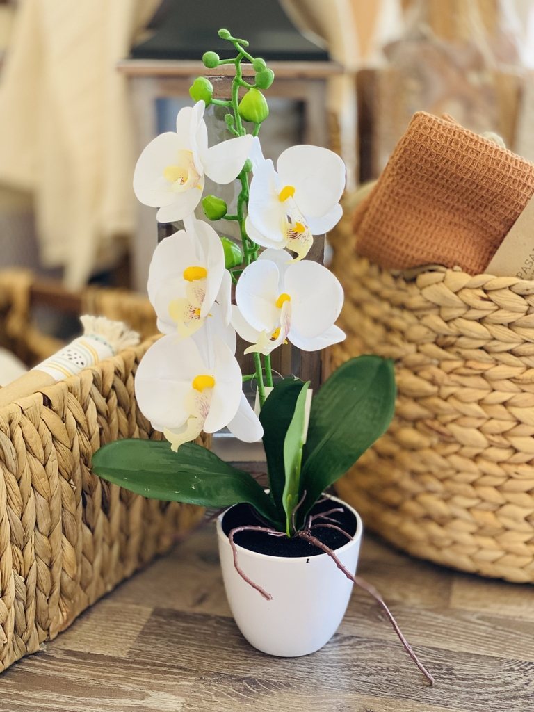

ROSAS

Las rosas son flores de la familia de las Rosáceas, conocidas por su belleza y fragancia. Son las flores más populares y vendidas en el mundo.
Precio: : $2 - $5 por unidad
ORQUIDEAS
Las orquídeas son plantas tropicales con flores llamativas y complejas. Son monocotiledóneas y pertenecen a la familia Orchidaceae.
Precio: $15 - $40 por planta
TULIPANES

Los tulipanes son plantas herbáceas con bulbo que producen flores grandes y vistosas. Son originarios de Asia y se cultivan en todo el mundo.
Precio: $1 - $3 por unidad
MARGARITAS

Las margaritas son flores perennes, de la familia de las Asteráceas, que se caracterizan por su forma alegre y expresiva. Son muy populares y decorativas, y se pueden encontrar en una gran variedad de colores.